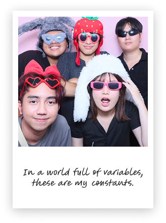

Contact Me
I'm currently open to internships and opportunities in UX/UI and Data Analysis.
Feel free to reach out!
 091-882-5865
091-882-5865



Overview
I'm Areeya Santiburananon, or May, a fourth year Computer Science student at Bangkok University.
I'm interested in data analysis and enjoy using data to gain insights and support decision-making. I have experience with Power BI, SQL, and Python through university projects, and I enjoy working with data!
Nice to meet you!
I'm currently open to internships and opportunities in UX/UI and Data Analysis.
Feel free to reach out!
091-882-5865